本章主要内容
在上一章中，我们看到了各种方法去保护在线程间共享的数据。但是有时候你不只是需要保护数据，还需要在独立的线程上进行同步操作。例如，一个线程在能够完成其任务之前可能需要等待另一个线程完成任务。一般来说，希望一个线程等待特定事件的发生或是一个条件变为true
是常见的事情。虽然通过定期检查“任务完成”的标识或是在共享数据中存储类似的东西也能够做到这一点，但却不甚理想。对于像这样的线程间同步操作的需求是如此常见，以至于C++标准库提供了以条件变量（conditionvariables）
和期值（future）
为形式的工具来处理它。
在本章中，我将讨论如何使用条件变量和期值来等待事件，以及如何使用它们来简化操作的同步。
假设你正乘坐通宵列车旅行。一个可以确保你在正确的车站下车的方法就是整夜保持清醒并注意火车停靠的地方。你不会误站，但你到那儿时就会觉得很累。或者，你可以查一下时间表，了解火车会在何时到达，将闹钟定的稍微提前一点，然后去睡觉。这是可以的；你不会错过站，但是如果火车晚点了，你就会醒得太早。也有可能闹钟的电池没电了，你就会睡过头以至于错过站。理想的状况是，你只管去睡觉，让某个人或某个东西在火车到站时叫醒你，无论何时。
这如何与线程相关呢？那么，如果一个线程正等待着第二个线程完成一项任务，它有几个选择。首先，它可以一直检查共享数据（由互斥元保护）中的标识，并且让第二个线程在完成任务时设置该标识。这有两项浪费，线程占用了宝贵的处理时间去反复检查该标识，以及当互斥元被等待的线程锁定后，就不能被任何其他线程锁定。两者都反对线程进行等待，因为它们限制了等待中的线程的可用资源，甚至阻止它在完成任务时设置标识。这类似于整夜保持清醒地与火车司机交谈，他不得不把火车开得更慢，因为你一直在干扰他，所以需要更长的时间才能到达。同样的，等待中的线程消耗了本可以被系统中其他线程使用的资源，并且最终等待的时间可能会比所需的更长。
第二个选择是使用std::this_thread::sleep_for()
函数（参见4.3节），让等待中的线程在检查之间休眠一会儿。
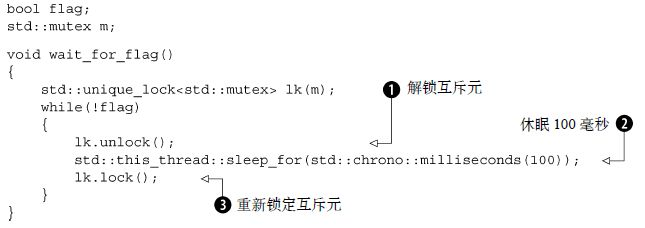
在这个循环里，函数在休眠之前❷解锁该互斥元❶，并在之后再次锁定之❸，所以另一个线程有机会获取它并设置标识。
这是一个进步，因为线程在休眠时并不浪费处理时间，但得到正确的休眠时间是很难的。检查之间休眠得过短，线程仍然会浪费处理时间进行检查；休眠得过长，即使线程正在等待的任务已经完成，它还会继续休眠，导致延迟。这种过度休眠很少直接影响程序的操作，但它可能意味着在快节奏的游戏中丢帧，或者在实时应用程序中过度运行一个时间片。
第三个选择，同时也是首选选择，是使用C++标准库提供的工具来等待事件本身。等待由另一个线程触发一个事件的最基本机制（例如前面提到的管道中存在的额外操作）是条件变量（conditionvariable） 。从概念上说，条件变量与某些事件或其他条件 相关，并且一个或多个线程可以等待 该条件被满足。当某个线程已经确定条件得到满足，它就可以通知 一个或多个正在条件变量上进行等待的线程，以便唤醒它们并让它们继续处理。
标准C++库提供了两个
条件变量的实现：std::condition_variable
和std::condition_variable_any
。这两个实现都在<condition_variable>
库的头文件中声明。两者都需要和互斥元一起工作，以便提供恰当的同步；前者仅限于和std::mutex
一起工作，而后者则可以与符合成为类似互斥元的最低标准的任何东西一起工作，因此以any
为后缀。因为std::condition_variable_any
更加普遍，所以会有大小、性能或者操作系统资源方面的形式的额外代价的可能，因此应该首选std::condition_variable
，除非需要额外的灵活性。
那么，如何使用std::condition_variable
去处理引言中的例子——怎么让正在等待工作的线程休眠，直到有数据要处理？清单4.1展示了一种方法，你可以用条件变量来实现这一点。
清单4.1 使用std::condition_variable等待数据
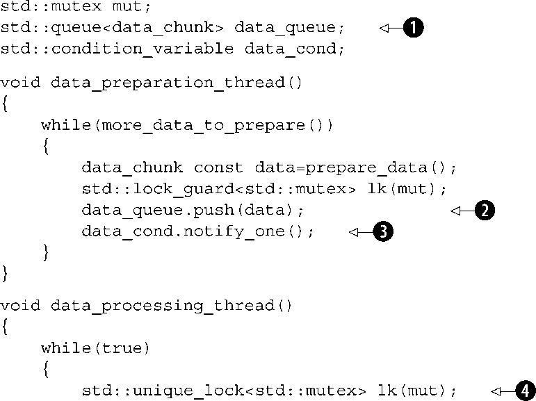
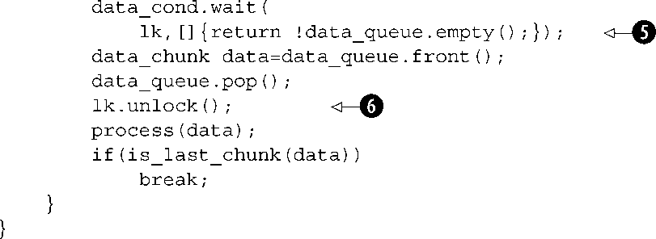
首先，你拥有一个用来在两个线程之间传递数据的队列❶。当数据就绪时，准备数据的线程使用std::lock_guard
去锁定保护队列的互斥元，并且将数据压入队列中❷。然后，它在std::condition_variable
的实例上调用notify_one()
成员函数，以通知等待中的线程（如果有的话）❸。
在另外一侧，你还有处理线程。该线程首先锁定互斥元，但是这次使用的是std::unique_lock
而不是std::lock_guard
❹——你很快就会明白为什么。该线程接下来在std::condition_variable
上调用wait()
，传入锁对象以及表示正在等待的条件的lambda函数❺。lambda函数是C++中的一个新功能，它允许你编写一个匿名函数作为另一个表达式的一部分，它们非常适合于为类似于wait()
这样的标准库函数指定断言。在这个例子中，简单的lambda函数[]{return !data_queue.empty();}
检查data_queue
是否不为empty()
，即队列中已有数据准备处理。附录A，A.5节更加详细地描述了lambda函数。
wait()
的实现接下来检查条件（通过调用所提供的lambda函数），并在满足时返回（lambda函数返回true
）。如果条件不满足（lambda函数返回false
），wait()
解锁互斥元，并将该线程置于阻塞或等待状态。当来自数据准备线程中对notify_one()
的调用通知条件变量时，线程从睡眠状态中苏醒（解除其阻塞），重新获得互斥元上的锁，并再次检查条件，如果条件已经满足，就从wait()
返回值，互斥元仍被锁定。如果条件不满足，该线程解锁互斥元，并恢复等待。这就是为什么需要std::unique_lock
而不是std：：lock_guard
——等待中的线程在等待期间必须解锁互斥元，并在这之后重新将其锁定，而std::lock_guard
没有提供这样的灵活性。如果互斥元在线程休眠期间始终被锁定，数据准备线程将无法锁定该互斥元，以便将项目添加至队列，并且等待中的线程将永远无法看到其条件得到满足。
清单4.1为等待使用了一个简单的lambda函数❺，该函数检查队列是否为非空的，但是任何函数或可调用对象都可以传入。如果你已经有一个函数来检查条件（也许因为它比这样一个简单的试验更加复杂），那么这个函数就可以直接传入，没有必要将其封装在lambda中。在对wait()
的调用中，条件变量可能会对所提供的条件检查任意多次。然而，它总是在互斥元被锁定的情况下这样做，并且当（且仅当）用来测试条件的函数返回true
，它就会立即返回。当等待线程重新获取互斥元并检查条件时，如果它并非直接响应另一个线程的通知，这就是所谓的伪唤醒（spurious wake）
。由于所有的这种伪唤醒的次数和频率根据定义是不确定的，所以使用对于条件检查具有副作用的函数是不可取的。如果你这样做，就必须做好多次产生副作用的准备。
解锁std::unique_lock
的灵活性不仅适用于对wait()
的调用；它还可用于你有待处理但仍未处理的数据❻。处理数据可能是一个耗时的操作，并且如你在第3章中看到的，在互斥元上持有锁超过所需的时间就是个不好的情况。
清单4.1所示的使用队列在线程之间传输数据，是很常见的场景。做得好的话，同步可以被限制在队列本身，大大减少了同步问题和竞争条件大概的数量。鉴于此，现在让我们从清单4.1中提取一个泛型的线程安全队列。
如果你要设计一个泛型队列，花几分钟考虑一下可能需要的操作是值得的，就像你在3.2.3节对线程安全堆栈所做的那样。让我们看一看C++标准库来寻找灵感，以清单4.2所示的std::queue<>
的容器适配器的形式。
清单4.2 std::queue接口
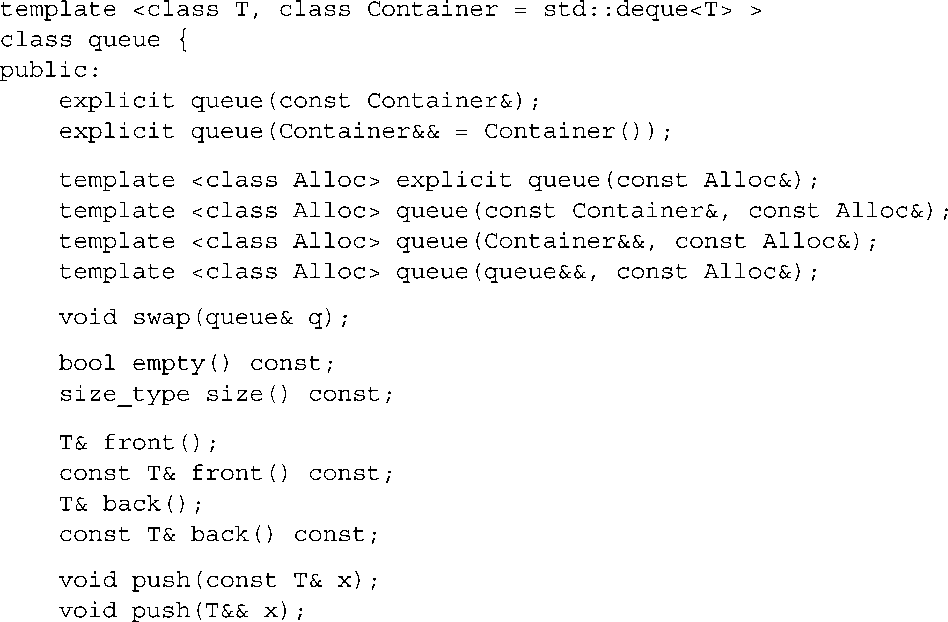
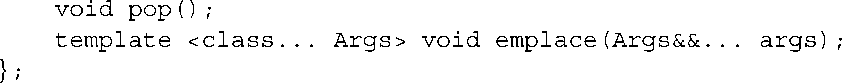
如果忽略构造函数、赋值和交换操作，那么还剩下3组操作：查询整个队列的状态（empty()
和size()
）、查询队列的元素（front()
和back()
）以及修改队列（push()
、pop()
和emplace()
）。这些操作与你之前在3.2.3节中对堆栈的操作是相同的，因此你也遇到相同的有关接口中固有的竞争条件的问题。所以，你需要将front()
和pop()
组合到单个函数调用中，就像你为了堆栈而组合top()
和pop()
那样。清单4.1中的代码增加了新的细微差别，但是，当使用队列在线程间传递数据时，接收线程往往需要等待数据。我们为pop()
提供了两个变体：try_pop()
，它试图从队列中弹出值，但总是立即返回（带有失败指示符），即使没有能获取到值。以及wait_and_pop()
，它会一直等待，直到有值要获取。如果将栈示例中的特征带到此处，则接口看起来如清单4.3所示。
清单4.3 threadsafe_queue的接口
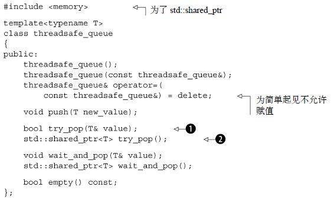
就像你为堆栈做的那样，减少构造函数并消除赋值以简化代码。如以前一样，还提供了try_pop()
和wait_and_pop()
的两个版本。try_pop()
的第一个重载❶将获取到的值存储在引用变量中，所以它可以将返回值用作状态；如果它获取到值就返回true
，否则返回false
（参见A.2节）。第二个重载❷不能这么做，因为它直接返回获取到的值。但是如果没有值可被获取，则返回的指针可以设置为NULL
。
那么，所有这一切如何与清单4.1关联起来呢？嗯，你可以从那里提取push()
以及wait_and_pop()
的代码，如清单4.4所示。
清单4.4 从清单4.1中提取push()和wait_and_pop()
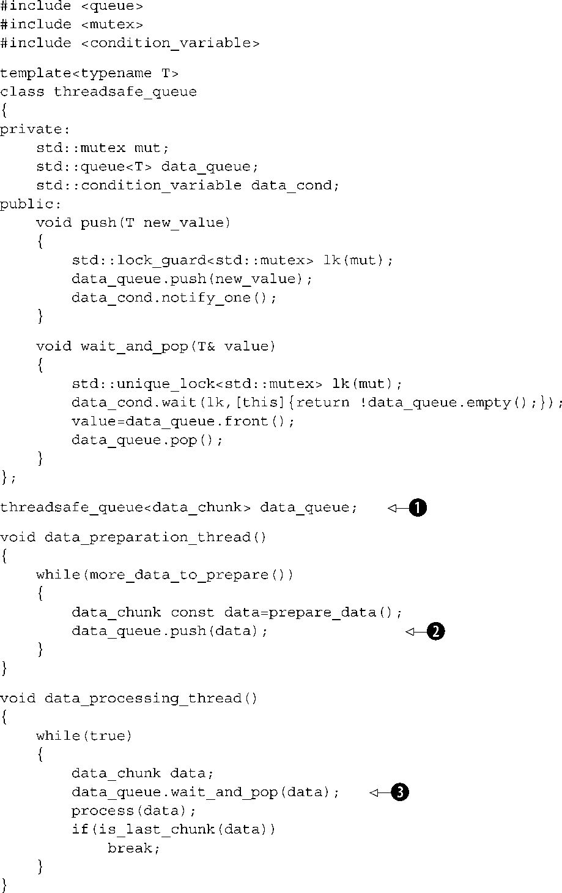
互斥元和条件变量现在包含在threadsafe_queue
的实例中，所以不再需要单独的变量❶，并且调用push()
不再需要外部的同步❷。此外，wait_and_pop()
负责条件变量等待❸。
wait_and_pop()
的另一个重载现在很容易编写，其余的函数几乎可以一字不差地从清单3.5中的栈示例中复制过来。清单4.5展示了最终的队列实现。
清单4.5 使用条件变量的线程安全队列的完整类定义
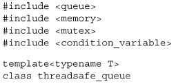
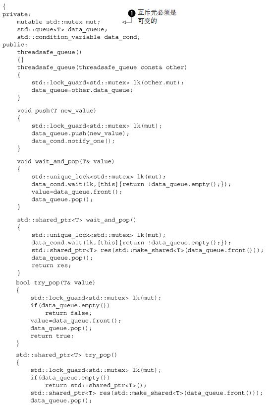
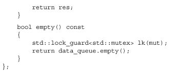
虽然empty()
是一个const
成员函数，并且拷贝构造函数的other
参数是一个const
引用，但是其他线程可能会有到该对象的非const
引用，并调用可变的成员函数，所以我们仍然需要锁定互斥元。由于锁定互斥元是一种可变的操作，故互斥元对象必须标记为mutable
❶，以便其可以被锁定在empty()
和拷贝构造函数中。
条件变量在多个线程等待同一个事件的场合也是很有用的。如果线程被用于划分工作负载，那么应该只有一个线程去响应通知，可以使用与清单4.1中所示完全相同的结构，只要运行多个数据处理线程的实例。当新的数据准备就绪，notify_one()
的调用将触发其中一个正在执行wait()
的线程去检查其条件，然后从wait()
返回（因为你刚向data_queue
中增加了一项）。谁也不能保证哪个线程会被通知到，即使是某个线程正在等待通知；所有的处理线程可能仍在处理数据。
另一种可能性是，多个线程正等待着同一个事件，并且它们都需要作出响应。这可能发生在共享数据正在初始化的场合下，处理线程都可以使用同一个数据，但需要等待其初始化完成（虽然有比这更好的机制，参见第3章中的3.3.1节），或者是线程需要等待共享数据更新的地方，比如周期性的重新初始化。在这些案例中，准备数据的线程可以在条件变量上调用notify_all()
成员函数而不是notify_one()
。顾名思义，这将导致所有
当前执行着wait()
的线程检查其等待中的条件。
如果等待线程只打算等待一次，那么当条件为true
时它就不会再等待这个条件变量了，条件变量未必是同步机制的最佳选择。如果所等待的条件是一个特定数据块的可用性时，这尤其正确。在这个场景中，使用期值（future）
可能会更合适。
假设你要乘飞机去国外度假。在到达机场并且完成了各种值机手续后，你仍然需要等待航班准备登机的通知，也许要几个小时。当然，你可以找到一些方法来消磨时间，比如看书、上网或者在昂贵的机场咖啡厅吃东西，但是从根本上来说，你只是在等待一件事情：登机时间到了的信号。不仅如此，一个给定的航班只进行一次；你下次去度假的时候，就会等待不同的航班。
C++标准库使用future 为这类一次性事件建模。如果一个线程需要等待特定的一次性事件，那么它就会获取一个future来代表这一事件。然后，该线程可以周期性地在这个future上等待一小段时间以检查事件是否发生（检查出发告示板），而在检查间隙执行其他的任务（在高价咖啡厅吃东西）。另外，它还可以去做另外一个任务，直到其所需的事件已发生才继续进行，随后就等待future变为就绪（ready） 。future可能会有与之相关的数据（比如你的航班在哪个登机口登机），或可能没有。一旦事件已经发生（即future已变为就绪 ），future就无法复位。
C++标准库中有两类future，是由<future>
库的头文件中声明的两个类模板实现的：唯一future（unique futures，
std::future<>
）
和共享future（shared futures，
std::shared_future<>
）。这两个类模板是参照std::unique_ptr
和std::shared_ptr
建立的。std::future
的实例是仅有的一个指向其关联事件的实例，而多个std::shared_future
的实例则可以指向同一个事件。对后者而言，所有实例将同时变为就绪
，并且它们都可以访问所有与该事件相关联的数据。这些关联的数据，就是这两种future成为模板的原因；像std::unique_ptr
和std::shared_ptr
一样，模板参数就是关联数据的类型。std:future<void>
、std::shared_future<void>
模板特化应该用于无关联数据的场合。虽然future被用于线程间通信，但是future对象本身却并不提供同步访问。如果多个线程需要访问同一个future对象，它们必须通过互斥元或其他同步机制来保护访问，如第3章中所述。然而，正如你将在4.2.5节中看到的，多个线程可以分别访问自己的std::shared_future<>
副本而无需进一步的同步，即使它们都指向同一个异步结果。
最基本的一次性事件是在后台运行着的计算结果。早在第2章中你就看到过std::thread
并没有提供一种简单的从这一任务中返回值的方法，我保证这将在第4章中通过使用future加以解决——现在是时候去看看如何做了。
假设你有一个长期运行的计算，预期最终将得到一个有用的结果，但是现在，你还不需要这个值。也许你已经找到一种方法来确定生命、宇宙及万物的答案，这是从Douglas Adams
[1]
那里偷来的一个例子。你可以启动一个新的线程来执行该计算，但这也意味着你必须注意将结果传回来，因为std::thread
并没有提供直接的机制来这样做。这就是std::async
函数模板（同样声明于<future>
头文件中）的由来。
在不需要立刻得到结果的时候，你可以使用std::async
来启动一个异步任务（asynchronoustask）
。std::async
返回一个std::future
对象，而不是给你一个std::thread
对象让你在上面等待，std::future
对象最终将持有函数的返回值。当你需要这个值时，只要在future上调用get()
，线程就会阻塞直到future就绪
，然后返回该值。清单4.6展示了一个简单的例子。
清单4.6 使用std::future获取异步任务的返回值
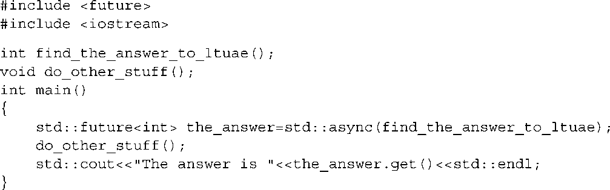
std::async
允许你通过将额外的参数添加到调用中，来将附加参数传递给函数，这与std::thread
是同样的方式。如果第一个参数是指向成员函数的指针，第二个参数则提供了用来应用该成员函数的对象（直接地，或通过指针，或封装在std::ref
中），其余的参数则作为参数传递给该成员函数。否则，第二个及后续的参数将作为参数，传递给第一个参数所指定的函数或可调用对象。和std::thread
一样，如果参数是右值，则通过移动
原来的参数来创建副本。这就允许使用只可移动的类型同时作为函数对象和参数。请看清单4.7。
清单4.7 使用std::async来将参数传递给函数
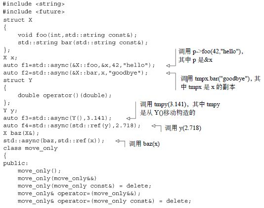
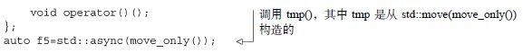
默认情况下，std::async
是否启动一个新线程，或者在等待future时任务是否同步运行都取决于具体实现方式。在大多数情况下这就是你所想要的，但你可以在函数调用之前使用一个额外的参数来指定究竟使用何种方式。这个参数为std::launch
类型，可以是std::launch::deferred
，以表明该函数调用将会延迟，直到在future上调用wait()
或get()
为止，或者是std::launch::async
，以表明该函数必须运行在它自己的线程上，又或者是std::launch::deferred | std::launch::async
，以表明可以由具体实现来选择。最后一个选项是默认的。如果函数调用被延迟，它有可能永远都不会实际运行。例如，
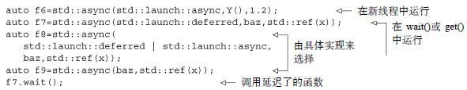
正如你稍后将在本章看到，并将在第8章中再次看到的那样，使用std::async
能够轻易地将算法转化成可以并行运行的任务。然而，这并不是将std::future
与任务相关联的唯一方式；你还可以通过将任务封装在std::packaged_task<>
类模板的一个实例中，或者通过编写代码，用std::promise<>
类模板显式设置值等方式来实现。std::packaged_task
是比std::promise
更高层次的抽象，所以我将从它开始。
std::packaged_task<>
将一个future绑定到一个函数或可调用对象上。当std::packaged_task<>
对象被调用时，它就调用相关联的函数或可调用对象，并且让future就绪
，将返回值作为关联数据储存。这可以被用作线程池的构件（参见第9章），或者其他任务管理模式，例如在每个任务自己的线程上运行，或在一个特定的后台线程上按顺序运行所有任务。如果一个大型操作可以分成许多自包含的子任务，其中每一个都可以被封装在一个std::packaged_task<>
实例中，然后将该实例传给任务调度器或线程池。这样就抽象出了任务的详细信息，调度程序仅需处理std::packaged_task<>
实例，而非各个函数。
std::packaged_task<>
类模板的模板参数为函数签名，比如void()
表示无参数无返回值的函数，或是像int(std::string &,double*)
表示接受对std::string
的非const
引用和指向double
的指针，并返回int
的函数。当你构造std::packaged_task
实例的时候，你必须传入一个函数或可调用对象，它可以接受指定的参数并且返回指定的返回类型。类型无需严格匹配，你可以用一个接受int
并返回float
的函数构造std::packaged_task<double(double)>
，因为这些类型是可以隐式转换的。
指定的函数签名的返回类型确定了从get_future()
成员函数返回的std：：future<>
的类型，而函数签名的参数列表用来指定封装任务的函数调用运算符的签名。例如，std::packaged_task<std::string(std::vector<char>*,int)>
的部分类定义如清单4.8所示。
清单4.8 std::packaged_task<>特化的部分类定义
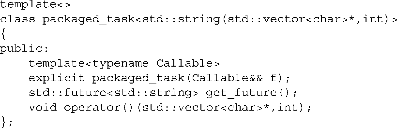
该std::packaged_task
对象是一个可调用对象，它可以被封装入一个std::function
对象，作为线程函数传给std::thread
，或传给需要可调用对象的另一个函数，或者干脆直接调用。当std::packaged_task
作为函数对象被调用时，提供给函数调用运算符的参数被传给所包含的函数，并且将返回值作为异步结果，存储在由get_future()
获取的std::future
中。因此，你可以将任务封装在std::packaged_task
中，并且在把std::packaged_task
对象传到别的地方进行适当调用之前获取future。当你需要结果时，你可以等待future变为就绪，清单4.9的例子实际展示了这一点。
许多GUI框架要求从特定的线程来完成GUI的更新，所以，如果另一个线程需要更新GUI，它必须向正确的线程发送消息来实现这一点。std::packaged_task
提供了一种更新GUI的方法，该方法无需为每个与GUI相关的活动获取自定义的消息。
清单4.9 使用std::packaged_task在GUI线程上运行代码
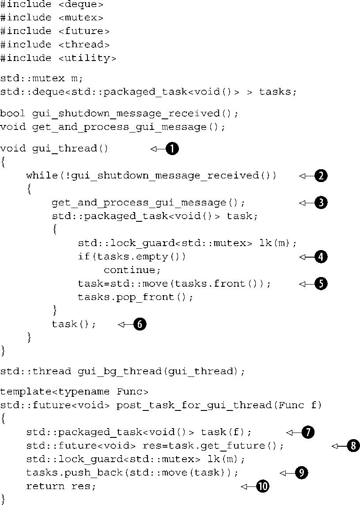
此代码非常简单：GUI线程❶循环直到收到通知GUI停止的消息❷，反复轮询待处理的GUI消息❸，比如用户点击，以及任务队列中的任务。如果队列中没有任务❹，则再次循环；否则，从任务队列中提取任务❺，解除队列中的锁，并运行任务❻。当任务完成时，与该任务相关联的future被设为就绪。
在队列上发布任务也同样简单：利用所提供的函数创建一个新的任务包❼，通过调用get_future()
成员函数从任务中获取future❽，同时在返回future到调用处之前❾将任务置于列表之上❿。发出消息给GUI线程的代码如果需要知道任务已完成，则可以等待该future；若无需知道，则可以丢弃该future。
本示例中的任务使用std:packaged_task<void()>
，它封装了一个接受零参数且返回void
的函数或可调用对象（如果它返回了别的东西，则返回值被丢弃）。这是最简单的任务，但如你在前面所看到的，std:packaged_task
也可以用于更复杂的情况——通过指定一个不同的函数签名作为模板参数，你可以改变返回类型（以及在future的关联状态中存储的数据类型）和函数调用运算符的参数类型。这个示例可以进行简单的扩展，让那些在GUI线程上运行的任务接受参数，并且返回std::future
中的值，而不是仅一个完成指示符。
那些无法用一个简单函数调用表达的任务和那些结果可能来自不止一个地方的任务又当如何？这些情况都可以通过第三种创建future的方式来处理：使用std::promise
来显式地设置值。
当有一个需要处理大量网络连接的应用程序时，通常倾向于在独立的线程上分别处理每个连接，因为这能使得网络通信更易于理解也更易于编程。这对于较低的连接数（因而线程数也较低）效果很好。然而，随着连接数的增加，这就变得不那么适合了；大量的线程就会消耗大量操作系统资源，并可能导致大量的上下文切换（当线程数超过了可用的硬件并发），进而影响性能。在极端情况下，操作系统可能会在其网络连接能力用尽之前，就为运行新的线程而耗尽资源。在具有超大量网络连接的应用程序中，通常用少量线程（可能仅有一个）来处理连接，每个线程一次处理多个连接。
考虑其中一个处理这种连接的线程。数据包将以基本上随机的顺序来自于待处理的各个连接，同样地，数据包将以随机顺序进行排队发送。在多数情况下，应用程序的其他部分将通过特定的网络连接，等待着数据被成功地发送或是新一批数据被成功地接收。
std::promise<T>
提供一种设置值（类型T
）方式，它可以在这之后通过相关联的std::future<T>
对象进行读取。一对std::promise
/std::future
为这一设施提供了一个可能的机制；等待中的线程可以阻塞future，同时提供数据的线程可以使用配对中的promise项，来设置相关的值并使future就绪
。
你可以通过调用get_future()
成员函数来获取与给定的std::promise
相关的std::future
对象，比如std::packaged_task
。当设置完promise的值（使用set_value()
成员函数），future会变为就绪
，并且可以用来获取所存储的数值。如果销毁std::promise
时未设置值，则将存入一个异常。4.2.4节描述了异常是如何跨线程转移的。
清单4.10展示了处理如前文所述的连接的示例代码。在这个例子中，使用一对std::promise<bool>
/std::future<bool>
对来标识一块传出数据的成功传输；与future关联的值就是一个简单的成功/失败标志。对于传入的数据包，与future关联的数据为数据包的负载。
清单4.10 使用promise在单个线程中处理多个连接
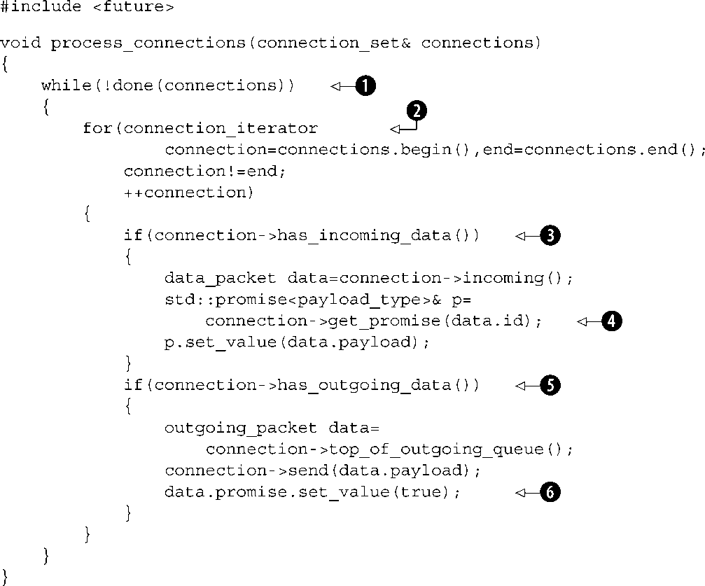
函数process_connections()
一直循环到done()
返回true
❶。每次循环中，轮流检查每个连接❷，在有传入数据时获取之❸或是发送队列中的传出数据❺。此处假定一个输入数据包具有ID和包含实际数据在内的负载。此ID被映射至std::promise
（可能是通过在关联容器中进行查找）❹，并且该值被设为数据包的负载。对于传出的数据包，数据包取自传出队列，并实际上通过此连接发送。一旦发送完毕，与传出数据关联的promise被设为true
以表示传输成功❻。此映射对于实际网络协议是否完好，取决于协议本身；这种promise/future风格的结构可能并不适用于某特定情况，尽管它确实与某些操作系统支持的异步I/O具有相似的结构。
迄今为止的所有代码完全忽略了异常。虽然想象一个万物都始终运转良好的世界是美好的，但却不切实际。有时候磁盘装满了，有时候你要找的东西恰好不在那里，有时候网络故障，有时数据库损坏。如果你正在需要结果的线程中执行操作，代码可能只是用异常报告了一个错误，因此仅仅因为你想用std::packaged_task
或std::promise
，就限制性地要求所有事情都正常工作是不必要的。因此C++标准库提供一个简便的方式，来处理这种场景下的异常，并允许他们作为相关结果的一部分而保存。
考率下面简短的代码片段。如果将 -1
传入square_root()
函数，会引发一个异常，同时将被调用者所看到。
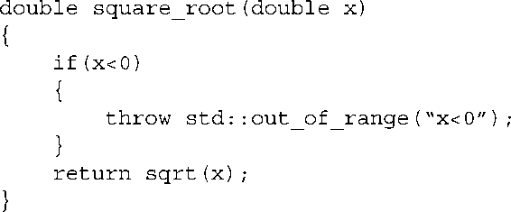
现在假设不是仅从当前线程调用square_root()：
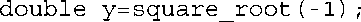
而是以异步调用的形式运行调用：
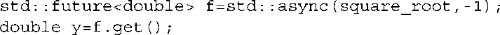
两者行为完全一致自然是最理想的；与y
得到函数调用的任意一种结果一样，如果调用f.get()
的线程能像在单线程情况下一样，能够看到里面的异常，那是极好的。
实际情况则是，如果作为std::async
一部分的函数调用引发了异常，该异常会被储存在future中，代替所存储的值，future变为就绪
，并且对get()
的调用会重新引发所存储的异常（注：重新引发的是原始异常对象抑或其副本，C++标准并没有指定，不同的编译器和库在此问题上作出了不同的选择）。这同样发生在将函数封装入std::packaged_task
的时候——当任务被调用时，如果封装的函数引发异常，该异常代替结果存入future，准备在调用get()
时引发。
顺理成章，std::promise
在显式地函数调用下提供相同的功能。如果期望存储一个异常而不是一个值，则调用set_exception()
成员函数而不是set_value()
。这通常是在引发异常作为算法的一部分时用在catch
块中，将该异常填入promise。
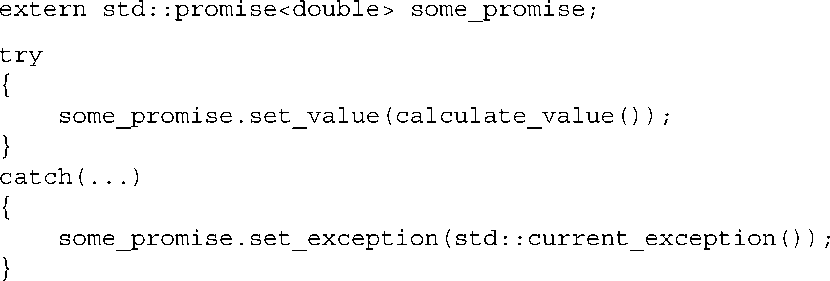
这里使用std::current_exception()
来获取已引发的异常。作为替代，可以使用std::copy_exception()
直接存储新的异常而不对引发。
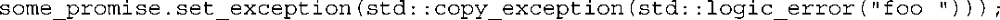
在异常的类型已知时，这比使用try
/catch
块更为简洁，并且应该优先使用，这不仅仅简化了代码，也为编译器提供更多的优化代码的机会。
另一种将异常存储至future的方式，是销毁与future关联的std::promise
或std::packaged_task
，而无需在promise上调用设置函数或是调用打包任务。在任何一种情况下，如果future尚未就绪
，std::promise
或std::packaged_task
的析构函数会将具有std::future_errc::broken_promise
错误代码的std::future_error
异常存储在相关联的状态中。通过创建future，你承诺提供一个值或异常，而通过销毁该值或异常的来源，你违背了承诺。在这种情况下如果编译器没有将任何东西存进future，等待中的线程可能会永远等下去。
到目前为止，所有的例子都使用了std::future
。然而，std::future
有其局限性，最起码，只有一个线程能等待结果。如果需要多于一个的线程等待同一个事件，则需要使用std::shared_future
来代替。
尽管std::future
能处理从一个线程向另一线程转移数据所需的全部必要的同步，但是调用某个特定的std::future
实例的成员函数却并没有相互同步。如果从多个线程访问单个std::future
对象而不进行额外的同步，就会出现数据竞争
和未定义行为。这是有意为之的，std::future
模型统一了异步结果的所有权，同时get()
的单发性质使得这样的并发访问没有意义——只有一个线程可以获取值，因为在首次调用get()
后，就没有任何可获取的值留下了。
如果你的并发代码的绝妙设计要求多个线程能够等待同一个事件，目前还无需失去信心；std::shared_future
完全能够实现这一点。鉴于std::future
是仅可移动的
，所以所有权可以在实例间转移，但是一次只有一个实例指向特定的异步结果。std::shared_future
实例是可复制的
，因此可以有多个对象引用同一个相关状态。
现在，即便有了std::shared_future
，各个对象的成员函数仍然是不同步的，所以为了避免从多个线程访问单个对象时出现数据竞争，必须使用锁来保护访问。首选的使用方式，是用一个对象的副本来代替，并且让每个线程访问自己的副本。从多个线程访问共享的异步状态，如果每个线程都是通过自己的std::shared_future
对象去访问该状态，那么就是安全的，见图4.1。
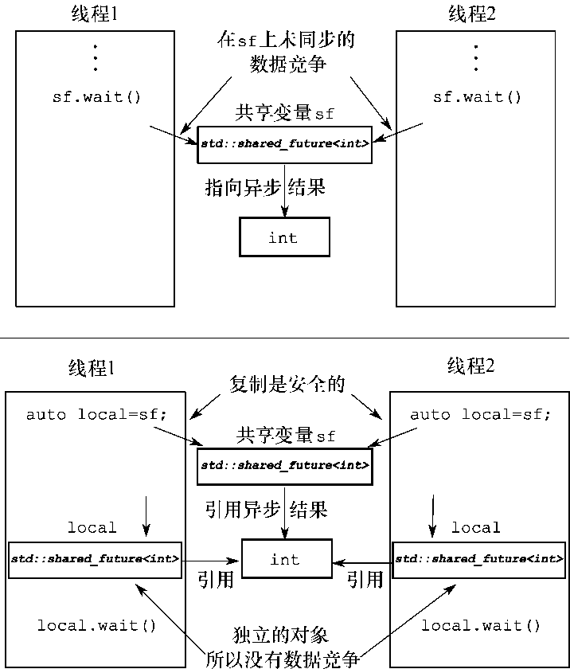
图4.1 使用多个std::shared_future对象避免数据竞争
std::shared_future
的一个潜在用处，是实现类似复杂电子表格的并行执行。每个单元都有一个单独的终值，可以被多个其他单元格中的公式使用。用来计算各个单元格结果的公式可以使用std::shared_future
来引用第一个单元。如果所有独立单元格的公式被并行执行，那些可以继续完成的任务可以进行，而那些依赖于其他单元格的公式将阻塞，直到其依赖关系准备就绪。这就使得系统能最大限度地利用可用的硬件并发。
引用了异步状态的std::shared_future
实例可以通过引用这些状态的std::future
实例来构造。由于std::future
对象不和其他对象共享异步状态的所有权，因此该所有权必须通过std::move
转移到std::shared_future
，将std::future
留在空状态，就像它被默认构造了一样。
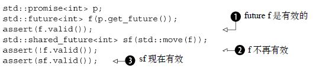
此处，future f
刚开始是有效的❶，因为它引用了promise p
的异步状态，但是将状态转移至sf
后，f
不再有效❷，而sf
有效❸。
正如其他可移动的对象那样，所有权的转移对于右值是隐式的，因此可以从std::promise
对象的get_future()
成员函数的返回值直接构造一个std::shared_future
，例如
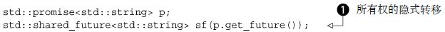
此处，所有权的转移是隐式的，std::shared_future<>
根据std::future<std::string>
类型的右值进行构造❶。
std::future
具有一个额外特性，即从变量的初始化自动推断变量类型的功能，使得std::shared_future
的使用更加方便（参见附录A中A.6节）。std::future
具有一个share()
成员函数，可以构造一个新的std::shared_future
，并且直接将所有权转移给它。这可以节省大量的录入，也使代码更易于更改。
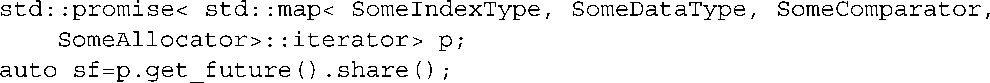
这种情况下，sf
的类型被推断为相当拗口的std::shared_future<std::map<SomeIndexType,SomeDataType,SomeComparator,SomeAllocator>::iterator>
。如果比较器或分配器改变了，仅需改变promise的类型，future的类型将自动更新以匹配。
有些时候，你会想要限制等待事件的时长，无论是因为某段代码能够占用的时间有着硬性的限制，还是因为如果事件不会很快发生，线程就可以去做其他有用的工作。为了处理这个功能，许多等待函数具有能够指定超时的变量。
前面介绍的所有阻塞调用都会阻塞一个不确定的时间段，挂起线程直至等待的事件发生。在许多情况下这是没问题的，但在某些情况下你会希望给等待时间加一个限制。这就使得能够发送某种形式的“我还活着”的消息给交互用户或者另一个进程，或是在用户已经放弃等待并且按下取消键时，干脆放弃等待。
有两类可供指定的超时：一为基于时间段
的超时，即等待一个指定的时间长度（例如30ms），或是绝对
超时，即等到一个指定的时间点（例如世界标准时间2011年11月30日17:30:15.045987023）。大多数等待函数提供处理这两种形式超时的变量，处理基于时间段超时的变量具有_for
后缀，而处理绝对超时的变量具有_until
后缀。
例如，std::condition_variable
具有两个重载版本的wait_for()
成员函数和两个重载版本的wait_until()
成员函数，对应于两个重载版本的wait()
——一个重载只是等待到收到信号，或超时，或发生伪唤醒；另一个重载在唤醒时检测所给的断言，并只在所给的断言为true（以及条件变量已收到信号）或超时的情况下才返回。
在细看使用超时的函数之前，让我们从时钟开始，看一看在C++中是如何指定时间的。
就C++标准库所关注的而言，时钟是时间信息的来源。具体来说，时钟是提供以下四个不同部分信息的类。
时钟的当前时间可以通过调用该时钟类的静态成员函数now()
来获取。例如，std::chrono::system_clock::now()
返回系统时钟的当前时间。对于具体某个时钟的时间点类型，是通过time_point
成员的typedef
来指定的，因此some_clock::now()
的返回类型是some_clock::time_point
。
时钟的节拍周期是由分数秒指定的，它由时钟的period
成员typedef
给出——每秒走25拍的时钟，就具有std::ratio<1,25>
的period
，而每2.5秒走一拍的时钟则具有std::ratio<5,2>
的period
。如果时钟的节拍周期直到运行时方可知晓，或者可能所给的应用程序运行期间可变，则period
可以指定为平均的节拍周期、最小可能的节拍周期，或是编写类库的人认为合适的一个值。在所给的一次程序的执行中，无法保证观察到的节拍周期与该时钟所指定的period
相符。
如果一个时钟以均匀速率计时
（无论该时速是否匹配period
）且不能被调整
，则该时钟被称为匀速（steady）
时钟。如果时钟是匀速的，则时钟类的is_steady
静态数据成员为true
，反之为false
。通常情况下，std::chrono::system_clock
是不
匀速的，因为时钟可以调整，考虑到本地时钟漂移，这种调整甚至是自动执行的。这样的调整可能会引起调用now()
所返回的值，比之前调用now()
所返回的值更早，这违背了均匀计时速率的要求。如你马上要看到的那样，匀速时钟对于计算超时来说非常重要，因此C++标准库提供形式为std::chrono::steady_clock
的匀速时钟。由C++标准库提供的其他时钟包括std::chrono::system_clock
（上文已提到），它代表系统的“真实时间”时钟，并为时间点和time_t
值之间的相互转换提供函数，还有std::chrono::high_resolution_clock
，它提供所有类库时钟中最小可能的节拍周期（和可能的最高精度）。它实际上可能是其他时钟之一的typedef
。这些时钟与其他时间工具都定义在<chrono>
类库头文件中。
我们马上要看看如何表示时间点，但在此之前，先来看看时间段是如何表示的。
时间段是时间支持中的最简单部分，它们是由std::chrono::duration<>
类模板（线程库使用的所有C++时间处理工具均位于std::chrono
的命名空间中）进行处理的。第一个模板参数为所代表类型（如int
、long
、或double
）；第二个参数是个分数，指定每个时间段单位表示多少秒。例如，以short
类型存储的几分钟的数目表示为std::chrono::duration<short,std::ratio<60,1>>
，因为1分钟有60秒。另一方面，以double
类型存储的毫秒数则表示为std::chrono::duration<double,std::ratio<1,1000>>
，因为1毫秒为1/1000秒。
标准库在std::chrono
命名空间中为各种时间段提供了一组预定义的typedef
：nanoseconds
、microseconds
、milliseconds
、seconds
、minutes
和hours
。它们均使用一个足够大的整数类型以供表示，以至于如果你希望的话，可以使用合适的单位来表示超过500年
的时间段。还有针对所有国际单位比例的typedef
可供指定自定义时间段时使用，从std::atto
（10−18
）至std::exa
（1018
）（还有更大的，若你的平台具有128位整型类型），例如std::duration<double,std::centi>
是以double
类型表示的1/100秒的计时。
在无需截断值的场合，时间段之间的转换是隐式的（因此将小时转换成秒是可以的，但将秒转换成小时则不然）。显式转换可以通过std::chrono::duration_cast<>
实现：
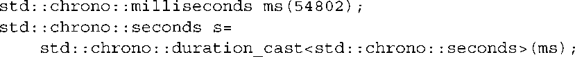
结果是截断而非四舍五入，因此在此例中s
值为54。
时间段支持算术运算，因此可以加、减时间段来得到新的时间段，或者可以乘、除一个底层表示类型（第一个模板参数）的常数。因此5*seconds(1)
和seconds(5)
或minutes(1)-seconds(55)
是相同的。时间段中单位数量的计数可以通过count()
成员函数获取。因此std::chrono::milliseconds(1234).count()
为1234。
基于时间段的等待是通过std::chrono::duration<>
实例完成的。例如，可以等待future就绪最多35毫秒。
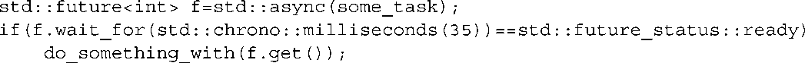
等待函数都会返回一个状态以表示等待是否超时，或者所等待的事件是否发生。在这种情况下，你在等待一个future，若等待超时，函数返回std::future_status:: timeout
，若future就绪，则返回std::future_status::ready
，或者如果future任务推迟，则返回std::future_status::deferred
。基于时间段的等待使用类库内部的匀速时钟来衡量时间，因此35毫秒意味着35毫秒的逝去时间，即便系统时钟在等待期间进行了调整（向前或向后）。当然，系统调度的多变和OS时钟的不同精度意味着线程之间发出调用并返回的实际时间可能远远长于35毫秒。
在看过时间段后，接下可以继续看看时间点。
时钟的时间点是通过std::chrono::time_point<>
类模板的实例来表示的，它以第一个模板参数指定其参考的时钟，并且以第二个模板参数指定计量单位（std::chrono::duration<>
的特化）。时间点的值是时间的长度（指定时间段的倍数），因而一个特定时间点被称为时钟的纪元（epoch）
。时钟的纪元是一项基本参数，但却不能直接查询，也未被C++标准指定。典型的纪元包括1970年1月1日00:00，以及运行应用程序的计算机引导启动的瞬间。时钟可以共享纪元或拥有独立的纪元。如果两个时钟共享一个纪元，则在一个类中的time_point typedef
可指定另一个类作为与time_point
相关联的时钟类型。虽然无法找出纪元的时间所在，但可以
获取给定time_point
的time_since_epoch()
。该成员函数返回一个时间段的值，其指定了从时钟纪元到该时间点的时间长度。
例如，你可以指定一个时间点为std::chrono::time_point<std::chrono::system_clock, std::chrono::minutes>
。这将保持时间与系统时钟相关，但却以分钟而不是系统时钟的固有测量精度（通常为秒或更小）进行测量。
你可以从std::chrono::time_point<>
的实例加上和减去时间段来产生新的时间点，因此std::chrono::high_resolution_clock::now()+ std::chrono::nanoseconds(500)
将在future中给你500纳秒的时间。这对于在知道代码块的最大时间段情况下计算绝对超时是极好的，但若其中有对等待函数的多个调用，或是在等待函数之前有非等待函数，就会占据一部分时间预算。
你还可以从另一个共享同一个时钟的时间点减去一个时间点。结果为指定两个时间点之间长度的时间段。这对于代码块的计时非常有用，例如，
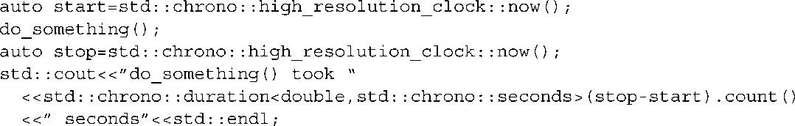
然而std::chrono::time_point<>
实例的时钟参数能做的不仅仅是指定纪元。当你将时间点传给到接受绝对超时的等待函数时，时间点的时钟参数可以用来测量时间。当时钟改变时会产生一个重要的影响，因为这一等待会跟踪时钟的改变，并且在时钟的now()
函数返回一个晚于指定超时的值之前都不会返回。如果时钟向前调整，将减少等待的总长度（按照匀速时钟计量），反之如果向后调整，就可能增加等待的总长度。
如你所料，时间点和等待函数的_until
变种共同使用。典型用例是在用作从程序中一个固定点的某个时钟
::now()
开始的偏移量，尽管与系统时钟相关联的时间点可以通过在对用户可见的时间，用std::chrono::system_clock::to_time_point()
静态成员函数从time_t
转换而来。例如，如果有一个最大值为500毫秒的时间，来等待一个与条件变量相关的事件，你可以按清单4.11所示来做。
清单4.11 等待一个具有超时的条件变量
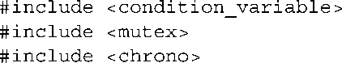
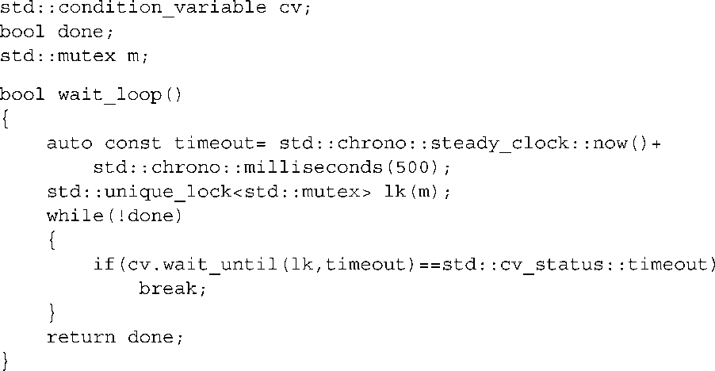
如果没有向等待传递断言，那么这是在有时间限制下等待条件变量的推荐方式。这种方式下，循环的总长度是有限的。如4.1.1节所示，当不传入断言时，需要通过循环来使用条件变量，以便处理伪唤醒。如果在循环中使用wait_for()
，可能在伪唤醒前，就已结束等待几乎全部时长，并且在经过下一次等待开始后再来一次。这可能会重复任意次，使得总的等待时间无穷无尽。
在看过了指定超时的基础知识后，让我们来看看能够使用超时的函数。
超时的最简单用法，是将延迟添加到特定线程的处理过程中，以便在它无所事事的时候避免占用其他线程的处理时间。在4.1节你曾见过这样的例子，在循环中轮询一个“完成”标记。处理它的两个函数是std::this_thread::sleep_for()
和std::this_thread::sleep_until()
。它们像一个基本的闹钟一样工作：在指定时间段（使用sleep_for()
）或直至指定的时间点（使用sleep_until()
），线程进入睡眠状态。sleep_for()
对于那些类似于4.1节中的例子是有意义的，其中一些事情必须周期性地进行，并且逝去的时间是重要的。另一方面，sleep_until()
允许安排线程在特定时间点唤醒。这可以用来触发半夜里的备份，或在早上6:00打印工资条，或在做视频回放时暂停线程直至下一帧的刷新。
当然，睡眠并不是唯一的接受超时的工具。你已经看到了可以将超时与条件变量和future一起使用。如果互斥元支持的话，甚至可以试图在互斥元获得锁时使用超时。普通的std::mutex
和std::recursive_mutex
并不支持锁定上的超时，但是std::timed_mutex
和std::recursive_timed_mutex
支持。这两种类型均支持try_lock_for()
和try_lock_until()
成员函数，它们可以在指定时间段内或在指定时间点之前尝试获取锁。表4.1展示了C++标准库中可以接受超时的函数及其参数和返回值。列作时间段（duration）
的参数必须为std::duration<>
的实例，而那些列作time_poin
t的必须为std::time_point<>
的实例。
表4.1 接受超时的函数
|
类/命名空间 |
函数 |
返回值 |
|---|---|---|
|
std::this_thread命名空间 |
sleep_for(duration ) sleep_until(time_point ) |
不可用 |
|
std::condition_variable或std::condition_variable_any |
wait_for(lock, duration ) wait_until(lock, time_point ) |
std::cv_status::timeout或 std::cv_status::no_timeout |
|
wait_for(lock, duration, predicate ) wait_until(lock, time_point, predicate ) |
bool—当唤醒时predicate 的返回值 |
|
|
std::timed_mutex或std::recursive_timed_mutex |
try_lock_for(duration ) try_lock_until(time_point ) |
bool—true如果获得了锁，否则false |
|
std::unique_lock<TimedLockable> |
unique_lock(lockable,duration ) unique_lock(lockable,time_point ) |
不可用—owns_lock()在新构造的对象上；如果获得了锁返回true，否则false |
|
try_lock_for(duration ) try_lock_until(time_point ) |
bool—true如果获得了锁，否则false |
|
|
std::future<ValueType >或std::shared_ future<ValueType > |
wait_for(duration ) wait_until(time_point ) |
std::future_status::timeout如果等待超时，std::future_status::ready如果future就绪或std::future_status::deferred如果future持有的延迟函数还没有开始 |
目前，我已经介绍了条件变量、future、promise和打包任务的机制，接下来是时候看一看更广的图景，以及如何利用它们来简化线程间操作的同步。
使用截至目前在本章中描述的同步工具作为构建模块，允许你着重关注需要同步的操作而非机制。一种可以简化代码的方式，是采用一种更加函数式的（functional， 在函数式编程 意义上）的方法来编写并发程序。并非直接在线程之间共享数据，而是每个任务都可以提供它所需要的数据，并通过使用future将结果传播至需要它的线程。
函数式编程（functionalprogramming, FP）
指的是一种编程风格，函数调用的结果仅单纯依赖于该函数的参数而不依赖于任何外部状态。这与函数的数学概念相关，同时也意味着如果用同一个参数执行一个函数两次，结果是完全一样的。这是许多C++标准库中数学函数，如sin
、cos
和sqrt
，以及基本类型简单操作如3+3
、6*9
、或1.3
/4.7
的特性。纯
函数也不修改
任何外部状态，函数的影响完全局限在返回值上。
这使得事情变得易于思考，尤其当涉及并发时，因为第3章中讨论的许多与共享内存相关的问题不复存在。如果没有修改共享数据，那么就不会有竞争条件，因此也就没有必要使用互斥元来保护共享数据。这是一个如此强大的简化，使得诸如Haskell [2] 这样的编程语言，在默认情况 下其所有函数都是纯函数，开始在编写并发系统中变得更为流行。因为大多数东西都是纯的，实际上的确 修改共享状态的非纯 函数就显得鹤立鸡群，因而也更易于理解它们是如何纳入应用程序整体结构的。
然而函数式编程的好处不仅仅局限在那些将其作为默认范型的语言。C++是一种多范型语言，它完全可以用FP风格编写程序。随着lambda函数（参见附录A中A.6节）的到来，从Boost到TR1的std::bind
合并，和自动变量类型推断的引入（参见附录A中A.7节），C++11比C++98更为容易实现函数式编程。future是使得C++中FP风格的并发切实可行的最后一块拼图。一个future可以在线程间来回传递，使得一个线程的计算结果依赖于另一个的结果，而无需任何对共享数据的显式访问
。
为了说明在FP风格并发中future的使用，让我们来看一个简单的快速排序算法的实现。算法的基本思想很简单，给定一列值，取一个元素作为中轴，然后将列表分为两组——比中轴小的为一组，大于等于中轴的为一组。列表的已排序副本，可以通过对这两组进行排序，并按照先是比中轴小的值已排序列表，接着是中轴，再后返回大于等于中轴的值已排序列表的顺序进行返回来获取。图4.2展示了10个整数的列表是如何根据此步骤进行排序的。FP风格的顺序实现在随后的代码中展示；它通过值的形式接受并返回列表，而不是像std::sort()
那样就地排序。
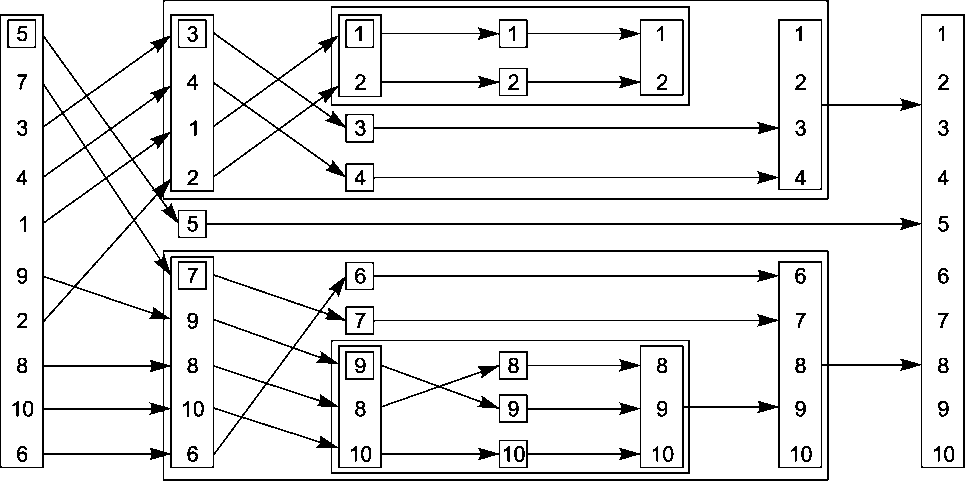
图4.2 FP风格递归排序
清单4.12 快速排序的顺序实现
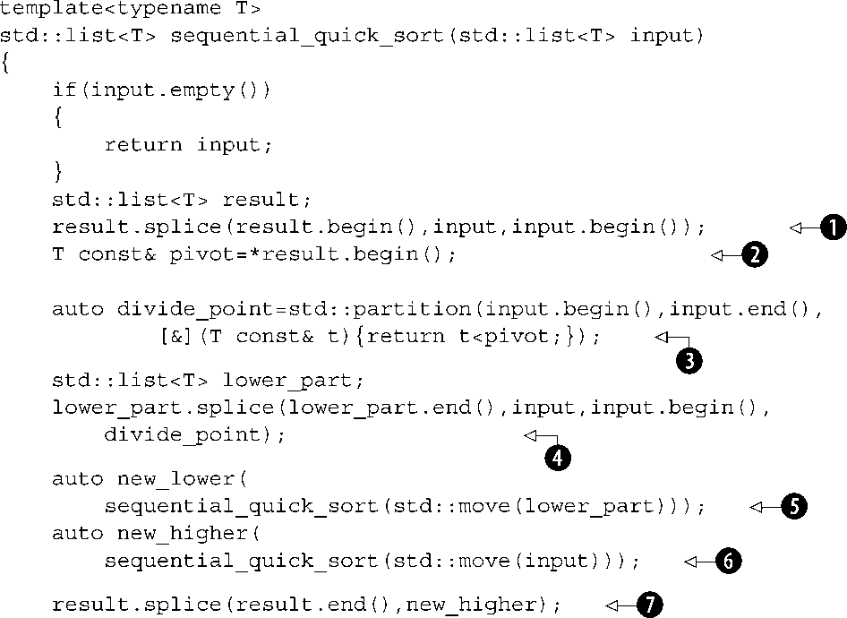
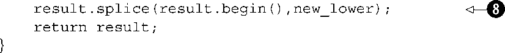
尽管接口是FP风格的，如果你自始至终使用FP风格，就会制作很多的副本，即你在内部使用了“标准”祈使风格。取出第一个元素作为中轴，方法是用splice()
❶将其从列表前端切下。虽然这样可能会导致一个次优排序（考虑到比较和交换的次数），由于列表遍历的缘故，用std::list
做任何其他事都可能增加很多的时间。你已知要在结果中得到它，因此可以直接将其拼接至将要使用的列表中。现在，你还会想要将其作比较，因此让我们对它进行引用，以避免复制❷。接着可以使用std::partition
将序列划分成小于
中轴的值和不
小于中轴的值❸。指定划分依据的最简单方式是使用一个lambda函数；使用引用捕获以避免复制pivot
的值（参见附录A中A.5节更多地了解lambda函数）。
std::partition()
就地重新排列列表，并返回一个迭代器，它标记着第一个不
小于中轴值的元素。迭代器的完整类型可能相当冗长，因此可以使用auto
类型说明符，使得编译器帮你解决（参见附录A中A.7节）。
现在，你已经选择了FP风格接口，因此如果打算使用递归来排序这两“半”，则需要创建两个列表。可以通过再次使用splice()
将从input
到divide_point
的值移动至一个新的列表：lower_part
❹。这使得input
中只仅留下剩余的值。你可以接着用递归调用对这两个列表进行排序❺、❻。通过使用std::move()
传入列表，也可以在此处避免复制——但是结果也将被隐式地移动出来。最后，你可以再次使用splice()
将result
以正确的顺序连起来。new_higher
值在中轴之后直到末尾❼，而new_lower
值从开始起，直到中轴之前❽。
由于已经使用了函数式风格，通过future将其转换成并行版本就很容易了，如清单4.13所示。这组操作与之前相同，区别在于其中一部分现在并行地运行。此版本使用future和函数式风格实现快速排序算法。
清单4.13 使用future的并行快速排序
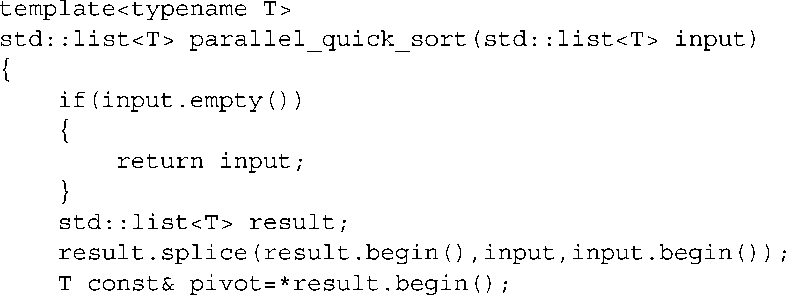
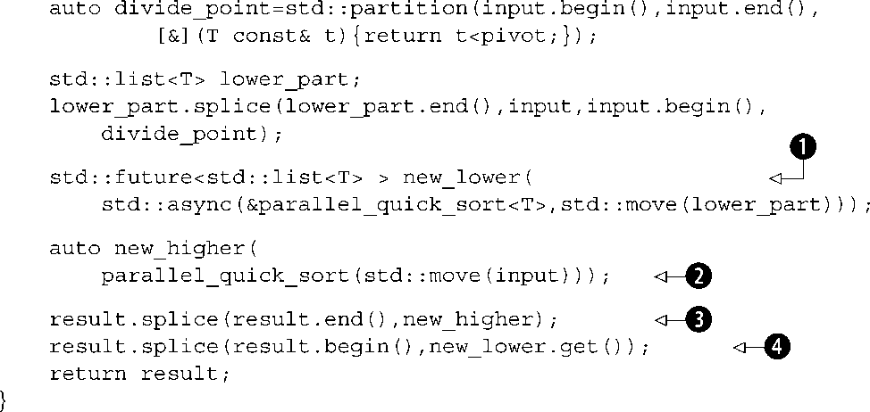
这里最大的变化是，没有在当前线程中对较小的部分进行排序，而是在另一个线程中使用std::async()
对其进行排序❶。列表的上部分跟之前一样直接递归❷进行排序。通过递归调用parallel_quick_sort()
，你可以充分利用现有的硬件并发能力。如果std::async()
每次启动一个新的线程，那么如果你向下递归三次，就会有8个线程在运行；如果向下递归10次（对大约1000个元素），如果硬件可以处理的话，就将有1024个线程在运行。如果类库认定产生了过多的任务（也许是因为任务的数量超过了可用的硬件并发能力），则可能改为同步地产生新任务。他们会在调用get()
的线程中运行，而不是在新的线程中，从而避免在不利于性能的情况下把任务传递到另一个线程的开销。值得注意的是，对于std::async
的实现来说，只有显式指定了std::launch::deferred
再为每一个任务开启一个新线程（甚至在面对大量的过度订阅时），或是只有显式指定了std::launch::async
再同步运行所有任务，才是完全符合的。如果依靠类库进行自动判定，建议你查阅一下这一实现的文档，看一看它究竟表现出什么样的行为。
与其使用std::async()
，不如自行编写spawn_task()
函数作为std::packaged_task
和std::thread
的简单封装，如清单4.14所示，为函数调用结果创建了一个std::packaged_task
，从中获取future，在线程中运行之并返回future。其本身并不会带来多少优点（实际上可能导致大量的过度订阅），但它为迁移到一个更复杂的实现做好准备，它通过一个工作线程池，将任务添加到一个即将运行的队列里。我们会在第9章研究线程池。相比于使用std::async
，只有在你确实知道将要做什么，并且希望想要通过线程池建立的方式进行完全掌控和执行任务的时候，才值得首选这种方法。
总之，回到parallel_quick_sort
。因为只是使用直接递归获取new_higher
，你可以将其拼接到之前的位置❸。但是现在new_lower
是std::future<std::list<T>>
而不仅是列表，因此需要在调用splice()
之前调用get()
来获取值❹。这就会等待后台任务完成，并将结果移动
至splice()
调用；get()
返回一个引用了所包含结果的右值，所以它可以被移除（参见附录A中A.1.1节更多地了解右值引用和移动语义）。
即使假设std::async()
对可用的硬件并发能力进行最优化的使用，这仍不是快速排序的理想并行实现。原因之一是，std::partition
完成了很多工作，且仍为一个连续调用，但对于目前已经足够好了。如果你对最快可能的并行实现有兴趣，请查阅学术文献。
清单4.14 一个简单spawn_task的实现
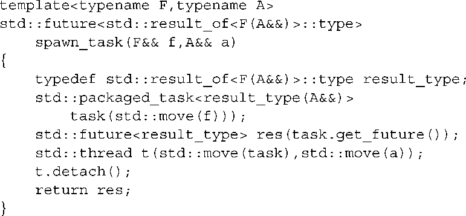
函数式编程并不是唯一的避开共享可变数据的并发编程范式；另一种范式为CSP（Communicating Sequential Process，通信顺序处理） [3] ，这种范式下线程在概念上完全独立，没有共享数据，但是具有允许消息在它们之间进行传递的通信通道。这是被编程语言Erlang（http://www.erlang.org/ ）所采用的范式，也通常被MPI（Message Passing Interface，消息传递接口）（http://www.mpi-forum.org/ ）环境用于C和C++中的高性能计算。我可以肯定到目前为止，你不会对这在C++中也可以在一些准则下得到支持而感到意外，接下来的一节将讨论实现这一点的一种方式。
CSP的思想很简单：如果没有共享数据，则每一个线程可以完全独立地推理得到，只需基于它对所接收到的消息如何进行反应。因此每个线程实际上可以等效为一个状态机：当它接收到消息时，它会根据初始状态进行操作，并以某种方式更新其状态，并可能向其他线程发送一个或多个消息。编写这种线程的一种方式，是将其形式化并实现一个有限状态机模型，但这并不是唯一的方式。状态机在应用程序结构中可以是隐式的。在任一给定的情况下，究竟哪种方法更佳，取决于具体形势的行为需求和编程团队的专长。但是选择实现每一个线程，则将其分割成独立的进程可能会从共享数据并发中移除很多复杂性，因而使得编程更加容易，降低了错误率。
真正的通信序列进程并不共享数据，所有的通信都通过消息队列，但由于C++线程共享一个地址空间，因此不可能强制执行这一需求。这就是准则介入的地方。作为应用程序或类库的作者，我们的责任是确保我们不在线程间共享数据。当然，为了线程之间的通信，消息队列必须是共享的，但是其细节可以封装在类库内。
想象一下，你正在实现ATM的代码。此代码需要处理人试图取钱的交互和与相关银行的交互，还要控制物理机器接受此人的卡片，显示恰当的信息，处理按键，出钞并退回用户的卡片。
处理这一切事情的其中一种方法，是将代码分成三个独立的线程：一个处理物理机器、一个处理ATM逻辑、还有一个与银行进行通信。这些线程可以单纯地通过传递消息而非共享数据进行通信。例如，当有人在机器旁边将卡插入或按下按钮时，处理机器的线程可以发送消息至逻辑线程，同时逻辑线程将发送消息至机器线程，指示要发多少钱等等。
对ATM逻辑进行建模的一种方式，是将其视为一个状态机。在每种状态中，线程等待可接受的消息，然后对其进行处理。这样可能会转换到一个新的状态，并且循环继续。一个简单实现中所涉及的状态如图4.3所示。在这个简化了的实现中，系统等待卡片插入。一旦卡片插入，便等待用户输入其密码，每次一个数字。他们可以删除最后输入的数字。一旦输入的数字足够多，就验证密码。如果密码错误，则结束，将卡片退回给用户，并继续等待有人插入卡片。如果密码正确，则等待用户取消交易或选择取出的金额。如果用户取消，则结束，并退出银行卡。如果用户选择了一个金额，则等待银行确认后发放现金并退出其卡片，或者显示“资金不足”的消息并退出其卡片。显然，真正的ATM比这复杂得多，但这已经足以阐述整个想法。
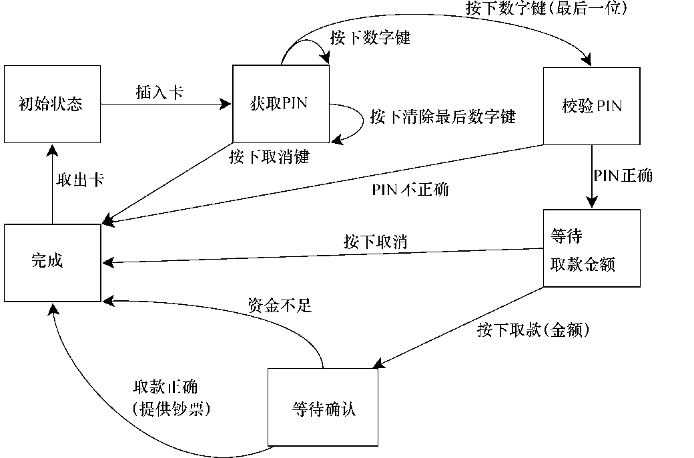
图4.3 ATM的简单状态机模型
有了ATM逻辑的状态机设计之后，就可以使用一个具有表示每一个状态的成员函数的类来实现之。每一个成员函数都可以等待指定的一组传入消息，并在它们到达后进行处理，其中可能触发切换到另一状态。每个不同的消息类型可以由一个独立的struct
来表示。清单4.15展示了这样一个系统中ATM逻辑的部分简单实现，包括主循环和第一个状态的实现，即等待卡片插入。
如你所见，所有消息传递所必需的同步完全隐藏于消息传递库内部（其基本实现以及本示例的完整代码见附录C）。
清单4.15 ATM逻辑类的简单实现
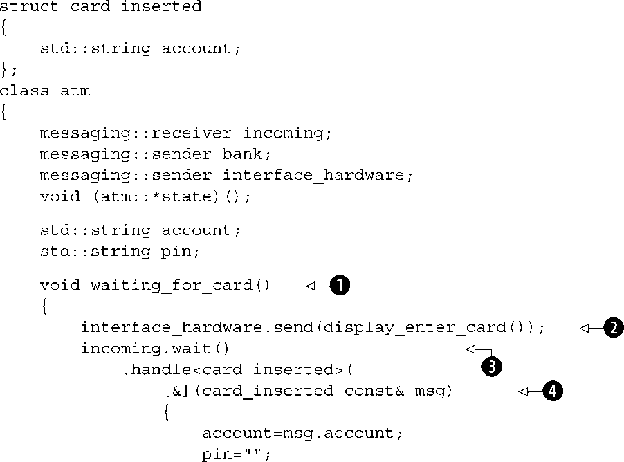
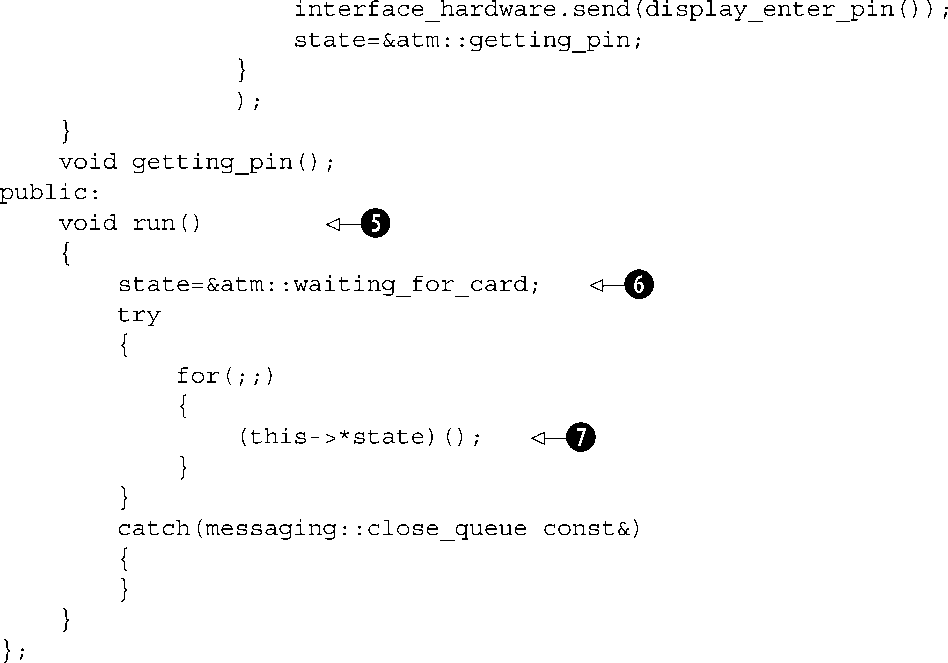
正如已经提到的，这里所描述的实现是从ATM所需的真正逻辑中粗略简化而来的，但这确实给你一种消息传递的编程风格的感受。没有必要去考虑同步和并发的问题，只要考虑在任意一个给定的店，可能会接收到哪些消息，以及该发送哪些消息。ATM逻辑的状态机在单线程上运行，而系统的其他部分，比如银行的接口和终端的接口，则在独立的线程上运行。这种程序设计风格被称作行为角色模型（actormodel） ——系统中有多个离散的角色 （均运行在独立线程上），用来相互发送消息以完成手头任务，除了直接通过消息传递的状态外，没有任何共享状态。
执行是由run()
成员函数开始的❺，设置初始状态为waiting_for_card
❻并重复执行代表当前状态（不管它是什么）的成员函数❼。状态函数就是atm
类的简单成员函数。waiting_for_card
状态函数❶也很简单：发送一则消息至界面以显示“等待卡片”的消息❷，接着等待要处理的消息。这里能处理的唯一消息类型是card_inserted
消息❸，可以通过lambda函数进行处理❹。你可以将任意函数或函数对象传递给handle
函数，但是像这种简单的情况，用lambda是最容易的。注意handle()
函数调用是链接至wait()
函数的。如果接收到的消息不匹配指定的类型，它将被丢弃，线程将继续等待直至接收到匹配的消息。
lambda函数本身只是将卡片中的账户号码缓存至一个成员变量中，清除当前密码，发送消息给接口硬件以显示要求用户输入其密码，改为“获取密码”状态。一旦消息处理程序完成，状态函数即返回，同时主循环调用新的状态函数❼。
getting_pin
状态函数略有些复杂，它可以处理三种不同类型的消息，如图4.3所示。由清单4.16加以展示。
清单4.16 简单ATM实现的getting_pin状态函数
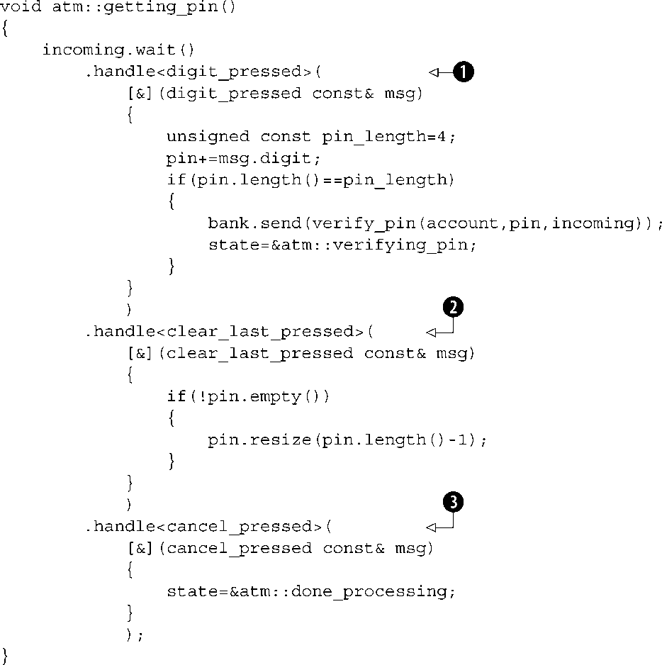
这时，有三种能够处理的消息类型，所以wait()
函数有三个handle()
调用链接至结尾❶、❷、❸。每一次对handle()
的调用将消息类型指定为模板参数，然后传至接受该特定消息类型作为参数的lambda函数。由于调用通过这种方式链接起来，wait()
的实现知道它正在等待一个digit_pressed
消息、clear_last_pressed
消息或是cancel_pressed
消息。任何其他类型的消息将再次被丢弃。
这时，在获取消息之后你并不一定非要改变状态。例如，如果你得到了一个digit_pressed
消息，仅需将它添加至pin
，除非它为最后的数字。清单4.15中的主循环❼将再次调用getting_pin()
来等待下一个数字（或是清除或取消）。
这对应于图4.3所示的行为。每一个状态框通过不同的成员函数来实现，它们等待相关的消息并适当地更新状态。
如你所见，这种编程风格可以大大简化设计并发系统的任务，因为每个线程可以完全独立地对待。这就是使用多线程来划分关注点的一个例子，并且需要你明确决定如何在线程间划分任务。
线程间的同步操作，是编写一个使用并发的应用程序的重要组成部分。如果没有同步，那么线程本质上是独立的，就可以被写作独立的应用程序，由于它们之间存在相关活动而作为群组运行。在本章中，我介绍了同步操作的各种方式，从最基本条件变量，到future、promise以及打包任务。我还讨论了解决同步问题的方式，函数式编程，其中每个任务产生的结果完全依赖于它的输入而不是外部环境，以及消息传递，其中线程间的通信是通过一个扮演中介角色的消息子系统发送异步消息来实现的。
我们已经讨论了许多在C++中可用的高阶工具，现在是时候来看看令这一切得以运转的底层工具了：C++内存模型和原子操作。
[1] 在The Hitchhiker’s Guide to the Galaxy 一书中，计算机Deep Thought被建造是用于决定“生命、宇宙和万物的答案”。答案是42。
[2] 参见http://www.haskell.org/ 。
[3] Communicating Sequential Processes , C.A.R. Hoare, Prentice Hall, 1985. Available free online at http://www.usingcsp.com/cspbook.pdf